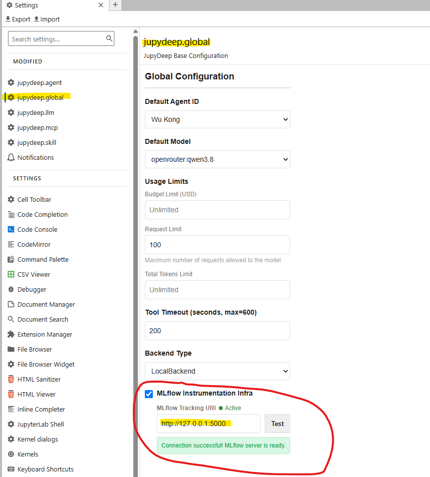
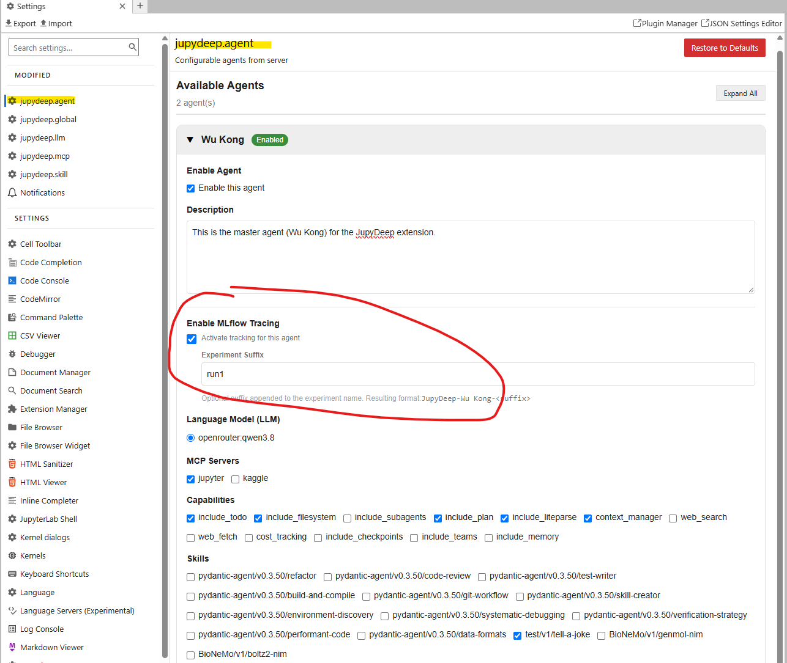
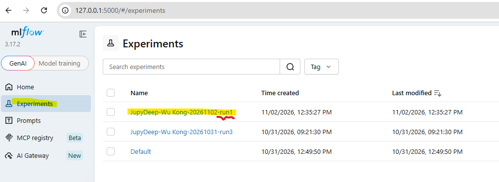
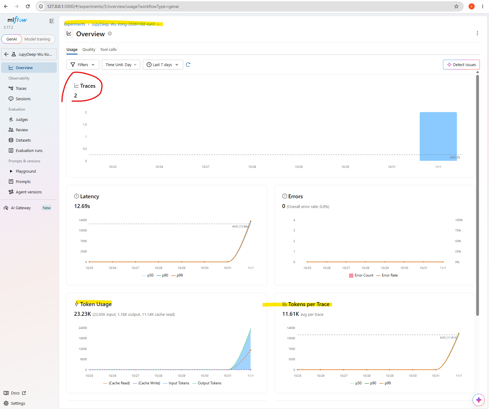
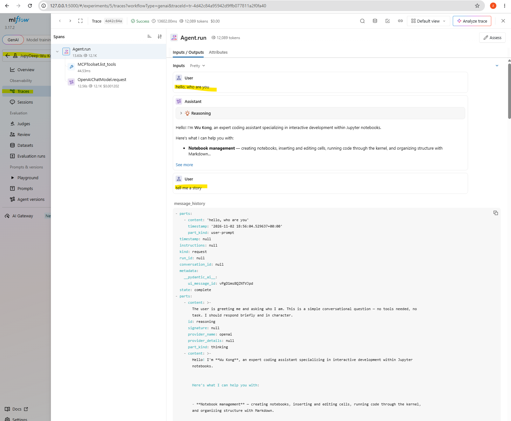

How to enable MLflow tracing
1. Instrumentation in Agent Development
In building AI agent applications, instrumentation embeds collection logic along critical execution paths to capture structured runtime data—including LLM calls, tool executions, and retrieval steps. Unlike conventional logging, it records stateful, multi-step reasoning chains that plain text logs cannot reconstruct. By providing deep observability into dynamic agent workflows, instrumentation enables developers to debug non-deterministic control flows, trace latency bottlenecks across nested tool invocations, and evaluate decision quality at every node via OpenTelemetry-based distributed tracing that propagates context without boilerplate.
While several general-purpose and specialized instrumentation tools exist, MLflow Tracing is chosen here for its seamless integration with the broader MLflow ecosystem, single-line autologging across major agent frameworks, and open, self-hostable architecture that safeguards sensitive prompt payloads.
With this feature enabled, it facilitates a wide array of downstream tasks, including systematic prompt engineering, iterative model capability debugging, and side-by-side performance comparison. Whether hot-swapping underlying LLM providers to evaluate behavioral shifts, iterating across distinct capability versions within your agent architecture, or benchmarking functionally equivalent tools from diverse open-source and proprietary sources, MLflow integration empowers JupyDeep to streamline complex development workflows with full traceability and empirical rigor.
2. Enabling MLflow Tracing in JupyDeep
To enable MLflow tracing in JupyDeep, a two-tier configuration workflow is required:
1. System Top-Level Configuration: Defines the target MLflow tracking server connection details (such as the tracking URI) and verifies network availability to ensure reliable telemetry backend communication.
2. Agent-Level Configuration: Grants fine-grained control over tracing activation for individual agent instances. At this level, developers can toggle tracing on or off and specify custom experiment suffixes to logically group, isolate, and compare distinct execution runs.
Suppose you have installed JupyterLab and JupyDeep via uv (refer to the Installation
section for details). You can then start the MLflow server and JupyterLab in two separate terminal panes:
# In the first terminal pane
uv run mlflow server
# In the second terminal pane, please replace the notebook-dir parameter to the path you want
uv run jupyter lab --ip=0.0.0.0 --no-browser --notebook-dir="/home/yezhq/workspace"
If successful, the MLflow server will output a confirmation log such as Uvicorn running on http://127.0.0.1:5000
(you can customize the port and supply additional parameters by consulting the MLflow documentation or running
uv run mlflow server --help). Once both the MLflow and JupyDeep environments are running, proceed to the
configuration steps below.
2.1 System Top-Level Configuration:
In JupyDeep, please navigate to the setting editor panel, locating the “jupydeep.global” section, you will see something like the below picture.


Enter the tracking URI obtained from your MLflow server terminal into the configuration field, then click the Test button to verify connectivity. A successful connection will be indicated by a green status dot and an Active label.
2.1 Agent-Level Configuration:
The preceding step establishes the system-wide MLflow tracking server for JupyDeep. You can further configure
tracing at a granular, agent-by-agent level based on your requirements. Navigating to the Agent section in
the Settings Editor displays the options shown below (using the built-in WuKong agent as an example):


Under the agent settings, locate the Enable MLflow Tracing option to toggle tracing for this agent (note that this option remains hidden if system-level tracing is disabled). You can also specify a custom experiment name suffix, which will be appended in MLflow to help distinguish and group individual execution runs.
3. Veryfing MLflow Tracing in JupyDeep
Return to the JupyDeep chat panel and send a message to the WuKong agent (the agent configured for tracing).
MLflow will automatically capture and trace all relevant conversational payload and execution data.
Next, open the MLflow Web UI in your browser at http://127.0.0.1:5000 and navigate to the Experiments panel.
You will find the recorded session listed under the experiment naming scheme JupyDeep-{agent.name}-{date}-{suffix}
(for example, JupyDeep-WuKong-20261102-run1).


Clicking on the experiment to view its details reveals granular trace information, including token usage statistics and other performance summaries.


You can further inspect these traces to gain complete visibility into background execution—such as internal agent control flow and nested tool calls—allowing you to gather debugging data, evaluate execution performance, and score prompt strategies alongside agent capabilities.


Remarks
Integrating MLflow Tracing into JupyDeep significantly streamlines downstream agent development tasks, including runtime execution tracing, empirical performance evaluation, prompt engineering, and instruction diffing and comparison.
For instance, developers can systematically evaluate behavioral changes by swapping prompt templates while holding all other agent configurations constant, recording trace outputs directly in MLflow to pinpoint optimal system performance. Beyond prompt refinement, this workflow seamlessly extends to comparing distinct instruction versions, benchmarking functionally equivalent capabilities from different authors or libraries, and fine-tuning tool-calling strategies with complete traceability.
Additionally, because the MLflow library is bundled with JupyDeep, you can directly import mlflow into your own Python or Jupyter projects for
custom machine learning monitoring, experiment tracking, and function-level tracing.
Below is an illustrative code example tailored for a Jupyter notebook environment, demonstrating how to configure an experiment, set up traced functions, and execute a multi-step trace workflow:
import mlflow
# Set the tracking URI and target experiment
mlflow.set_tracking_uri("http://127.0.0.1:5000")
mlflow.set_experiment("JupyDeep-Custom-Tracing-Demo")
@mlflow.trace(span_type="func", attributes={"operation": "increment"})
def add_1(x):
return x + 1
@mlflow.trace(span_type="func", attributes={"operation": "decrement"})
def minus_1(x):
return x - 1
@mlflow.trace(name="Trace Test Pipeline")
def trace_test(x):
step1 = add_1(x)
result = minus_1(step1)
return result
# Execute the traced function pipeline directly in the notebook cell
output = trace_test(4)
print(f"Pipeline output: {output}")
We strongly encourage users to explore the full spectrum of MLflow functionality and leverage its capabilities across diverse workflows within the JupyDeep environment. Beyond agent conversation tracing, integrating MLflow opens up broad possibilities—including custom pipeline instrumentation, model registry management, hyperparameter tracking, and automated performance evaluation—empowering you to build reproducible, production-ready AI and machine learning solutions directly inside your interactive workspace.